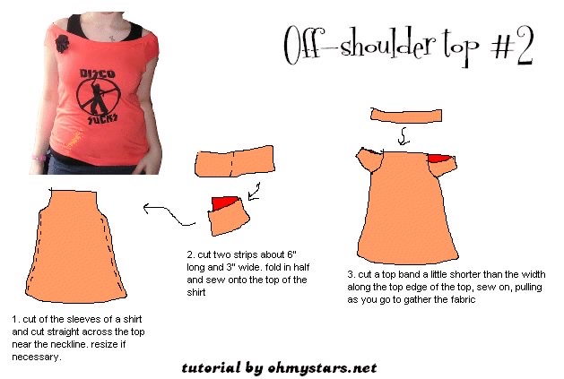
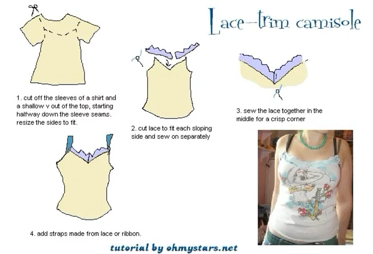
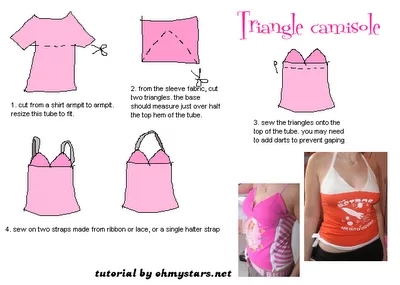
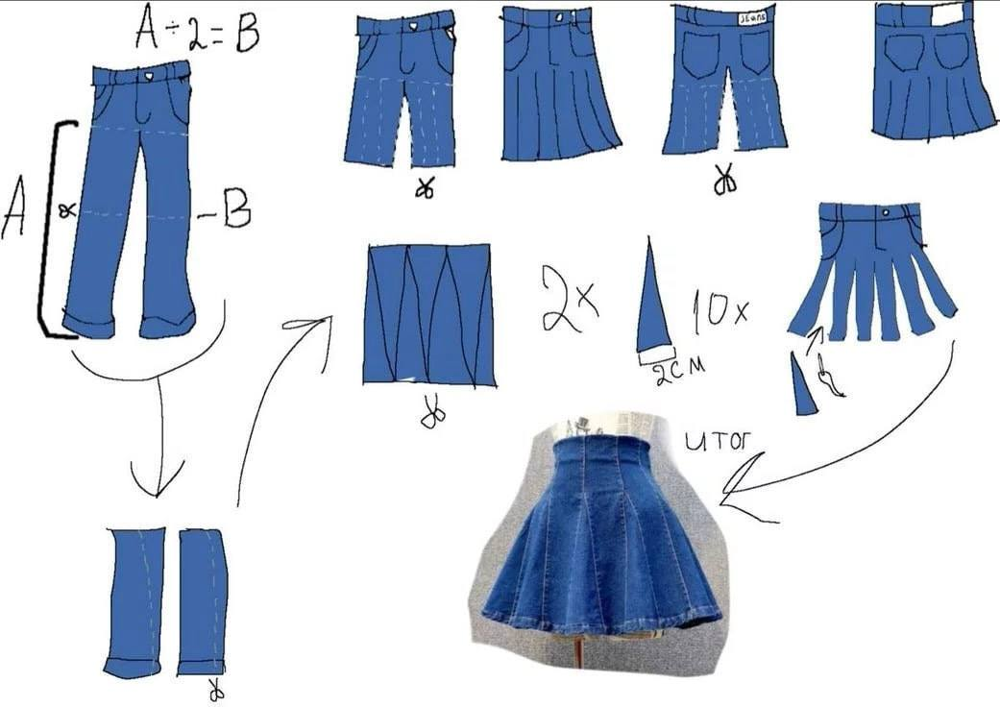
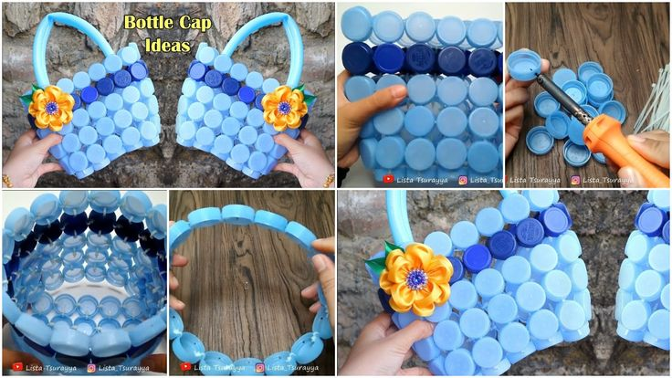
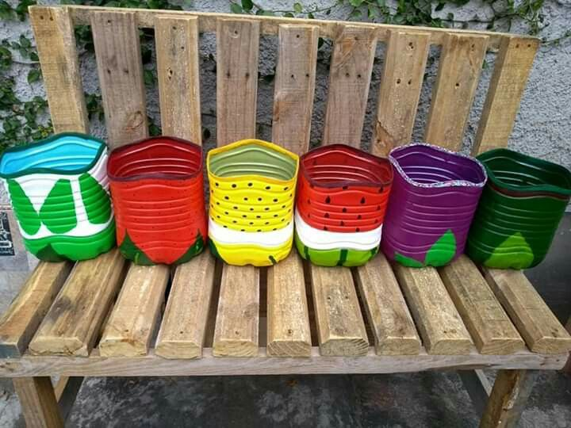

Gallery
Explore our research, teamwork, activities, and upcycling ideas to reduce textile waste.
Explore our research, teamwork, activities, and upcycling ideas to reduce textile waste.

A tutorial showing how to repurpose a t-shirt by cutting off the neckline and creating a folded-over, off-the-shoulder sleeve detail.

Instructions on how to add a lace trim to the neckline of a simple tank top.

A guide to transforming a t-shirt into a halter style top by cutting it into a triangular shape and adding straps.

A tutorial demonstrating how to cut up a pair of jeans or pants and repurpose the fabric to sew a skirt.

A craft project showing how to use plastic bottle caps together to create a structured, colorful basket.

A collection of plastic bottles cut heights and painted in bright colors to use as desk organizers or small planters.
Small eco-friendly habits can create a big positive impact.